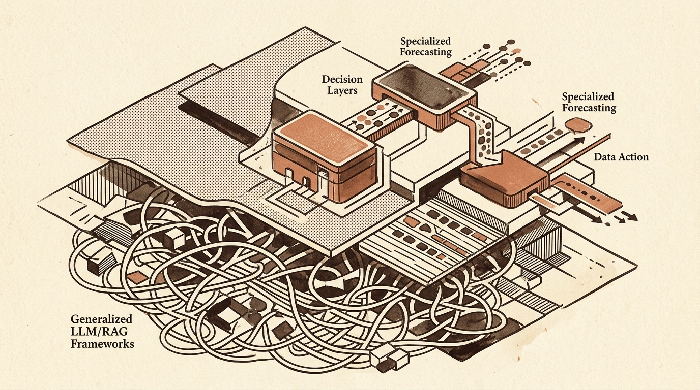
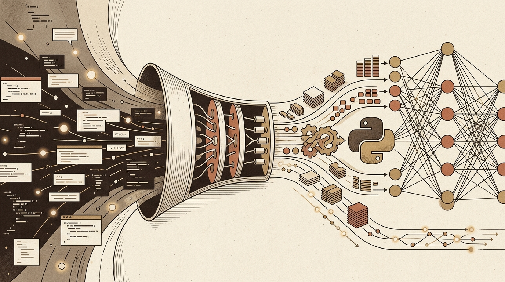

Daily digest
-

Towards Data Science
Decision Layers, Specialized Forecasting, and Architectural Boundaries in Machine Learning
Recent developments in applied data science highlight a growing emphasis on defining clear operational boundaries within AI systems. Rather than treating large language models or retrieval-augmented generation (RAG)…
-

KDnuggets
Optimizing Small Language Models and Mastering Python Capabilities
Small language model (SLM) optimization requires structural adjustments to how data is processed during execution. The latest installment in SLM performance tuning highlights the advantages of grouping inputs by…
-
arXiv cs.LG
Methods for Model Auditability, Real-World Time Series, and Multimodal Domain Adaptation
Modern machine learning research continually encounters discrepancies between simplified operational assumptions and real-world deployment conditions. Recent papers emphasize improving model trust and practical…